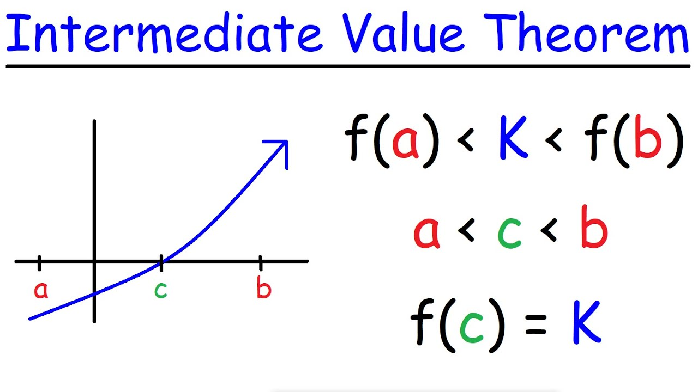

Theorem
If f is continuous on [a,b] and f(a) < 0 < f(b), then there is a c in (a,b) such that f(c) = 0

Proof
Suppose f is continuous on [a,b] and f(a) < 0 < f(b)
Let S = {x in [a,b] | f(x) < 0}
S is non-empty because a is in S
It's bounded above because b is an upper bound, therefore S has a supremum; let c = sup(S)
We want to prove f(c)=0 so consider three scenarios: f(c)<0, f(c)>0, f(c)=0
I: f(c) < 0
Because f is continuous at x=c, there exists delta (call it d) such that |x-c| < d implies |f(x)-f(c)| < f(c)
Note |f(x)-f(c)| < f(c) implies f(c) < f(x) -f(c) < -f(c) which implies 2f(c) < f(x) < 0
If x = c + d/2, f(x) is negative to c is not an upper bound of S (contradiction)
II: f(c) > 0
Similar to before, there exists delta (call it d) such that |x-c| < d implies |f(x)-f(c)| > f(c)
But then c - d/2 is a smallr upper bound of S than c is, so c is not the supremum (contradiction II)
Therefore f(c) = 0